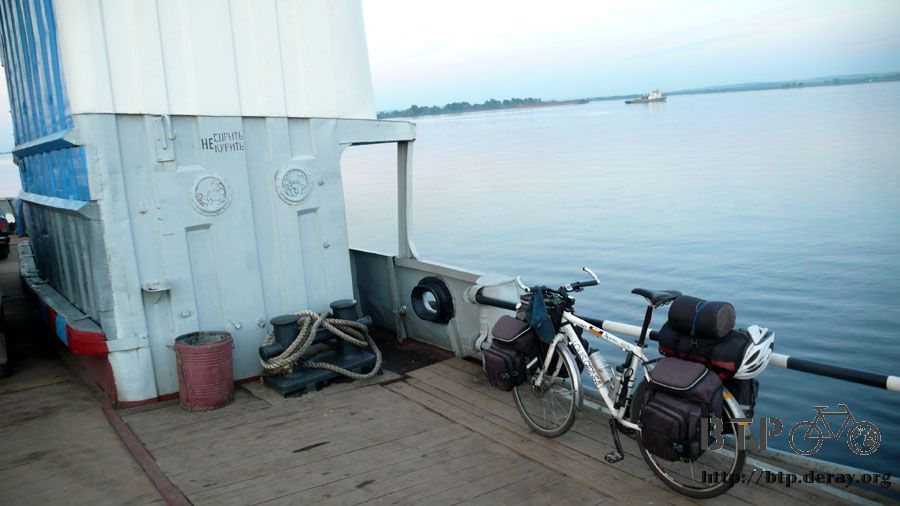

順風車
睡醒之後覺得到處都是濕的，帳篷、睡袋都帶著濕氣，夜裡明明就沒有下雨，怎麼會這麼濕？
難道地表濕氣的威力這麼強大嗎？但是我有很乖地鋪上睡墊才睡覺呀，爬出帳篷的時候看見自己睡在五里霧中，難怪濕氣這麼重。
今天起得很早，我的手錶是六點半不到就起床，換成當地時間是凌晨四點半，太陽還沒有完全冒出頭，地面到處都瀰漫著霧氣。
這真是漂亮得不可思議的景色，睡在外面其實挺有趣的，每天醒來看到的都是自然的美景，少了屋頂的保護卻也多了一點大地的親切。
地表濕氣倒不如想像中的具威脅性，霧氣則讓所有的東西都濕得不像話，小多身上凝結了一顆顆的水滴、晾在外頭的褲子和外套也都是濕的。
其他東西稍微濕掉沒關係，等一下騎車的時候吹風曬太陽一下就乾了，最糟糕就是帳篷和睡袋，這兩個東西是要打包收起來的，
要是受潮了，又沒有適當處理的話，下次拿出來繼續用的時候可能已經長滿了霉斑，要用這樣的東西露營還真是痛苦呢。
暫時還想不到該怎麼處理，還是先打包起來等等再說。
翻過土的地上也因為霧氣而潮濕著，唯一乾著的一塊地就是昨天我睡覺的地方。
昨天拿東西下斜坡很容易，今天要反過來進行，將行李和小多搬回斜坡上，吃力很多。
鬆軟的土一踩就崩裂下陷，兩隻腳丫子一下子就沾滿了泥土，走過草堆的時候又附著上露水，泥土就變成爛泥巴。
來回搬著行李和小多一共爬了三趟，之後我的腳就變成這個樣子了。
低頭看著髒兮兮的腳，實在很傷腦筋，這樣叫我怎麼穿鞋子跟襪子騎車呢？
如果要穿著拖鞋騎車也不是不可以，但是這整個也太髒了一點吧，而且鞋子很難攜帶，不論是拿在手上還是固定在包包上都很不方便。
穿著拖鞋先騎一小段路回到昨天那一棟大餐廳，這麼早還沒有別的客人，好加在餐廳是營業中，再度跑進去廁所將雙腳洗乾淨，順便洗臉刷牙。
這下子總算可以穿上鞋襪騎車，展開今天的旅行了。
離開這個休息區之後又進入了田野的區域，十一點的時候才到另一個停滿卡車的休息區。
很幸運地發現一間已經歇業的餐廳，屋簷下的柵欄還蠻乾淨的，配上艷陽高照，我將睡袋以及帳棚拆開來晾在這裡曬半小時。
帳篷從睡醒打包、騎了三個多小時的車、重新拆開拿出來曝曬，表面依然還是佈滿了水滴，
睡袋其實一樣的濕，但是它的表面不是防水材質，水氣都吸到裡面去，幸虧有地方可以曬乾。
曝曬工作進行的時候，我去了商店想買東西，更重要的目的是想換零錢，身上帶著一千盧布大鈔，很多地方都找不開。
進到這間商店的時候覺得什麼地方怪怪的，和以往看到的商店不太一樣，有種違和感。
直到老闆出現，我拿了一瓶果汁詢問價錢之後才知道這種奇怪的感覺是什麼。
這裡是黑店呀！
商品沒有標價的貼紙，價錢隨便老闆自己喊，一公升裝的果汁，外面頂多賣三十～四十左右，這裡開價七十盧布。
問過價錢之後我將果汁還回去，打開冰箱拿了兩個喜歡吃的牛奶冰淇淋，居然要跟我收二十五盧布，當我是呆子還是凱子？
價錢都是外面的兩倍以上，大概看我是觀光客好騙，所以唬爛開價，結果在這裡什麼也沒買，大鈔還是換不開。
回到屋簷底下，睡袋已經曬得熱呼呼的，變的蓬鬆起來，等等還要收納回袋子裡，有點麻煩@@"
從包包拿出一袋泡麵，背後的圖示說可以用煮的、泡的，但是沒有說可以乾吃。
將泡麵捏碎、灑上調味粉、連油包都照樣給它滴進去，搖一搖之後就當脆麵直接吃起來，味道還挺不錯的，稍微鹹了一點就是。
半小時後將睡袋和帳棚重新收納起來，發霉的顧慮已經解除，牽車在休息區找吃飯和充電的地方。
餐廳固然很多，適合待在裡面寫遊記的得符合一些條件，裡面要有插頭、可以看見小多、員工不要太機車。
這間餐廳完全適合窩在裡面兩三個小時整理遊記，但是沒辦法讓我吃飯，拿出一千元紙鈔的時候員工搖搖頭說找不開。
腰包裡的零錢湊一湊只買了一瓶氣泡礦泉水，雖然不能吃飯，但還是可以在店裡的角落寫遊記，只是沒坐在餐桌上，而是坐在門口處的地上寫。
進來用餐的客人第一眼就會看到我，有個大叔好奇的打量我很久，他是開長途大卡車的，一聊之後才發現我們有驚人的相似。
他開著卡車從中國的霍爾果斯開始，一路經過哈薩克，現在要往莫斯科去，這段路線跟我騎車的路線幾乎一樣。
卡車大叔比我還訝異，這段遙遠的路他跟一個夥伴交替開車都嫌累，我騎著自行車也有辦法騎這麼遠。
既然都要去莫斯科，他說把小多牽上他的卡車吧，他免費載我過去，最快明天就可以到了。
因為他是一個很風趣的大叔，我就配合他演出了一下，真的讓他把小多牽到卡車上，拍張照當紀念。
這個大叔除了風趣之外，遇到他之後我又看到了一個新的希望，由於他是開國際卡車的，這一趟到莫斯科之後，接著又要開回哈薩克。
我拿出包包裡的堅戈，問說能不能跟你換成盧布？
之前在哈薩克過的還滿省的，旅費剩下一萬兩千兩百元和一些硬幣，一離開哈薩克就變成廢紙，沒有地方可以使用。
還好遇到這個大叔，他也願意跟我換錢，拿著計算機到餐廳裡研究該換多少盧布比較適當。
盧布和堅戈之間沒有兌換的匯率，計算機讓大叔們按來按去，我心裡則心算著匯率，不論是先換成台幣或是換成美金，結果大概都是值兩千五百盧布左右。
但這個交易可不是跟銀行換，扣掉一些手續費和酬庸，要是能夠拿回兩千三百盧布我就很開心了，反正堅戈帶在身上也是廢紙。
最低限度起碼要拿回兩千盧布，不然整個就太虧本了。
大叔們計算機按完之後，上面的數字顯示兩千八百三十七元，不知道他們用什麼匯率算出來這個數字？
我按了兩千五百元，說給我這個數字就可以了，一定有一邊搞錯了匯率，但卻因此雙方都覺得這是很划算的交易，沒必要去追究到底誰吃虧。
換了錢之後身上的盤纏又多了一些，大叔們也請我吃過煎餅和紅茶，之後才道謝離開。
上路後沒多久，大叔們開著卡車就追上了我，還特地停在路邊把我攔下來，拍了幾張照片才祝我一路順風。
臨別之前又問了我真的不搭他們的車去莫斯科？明天就可以到喔～考慮一下吧。
不用了啦～我自己騎就好了，大概再一個星期我也可以騎到莫斯科，謝謝你們的好意、還有午餐的招待、以及跟我換錢的交易！
往前騎馬路又逐漸變得寬闊，兩線道變成四線道，路旁也出現廣告的看板，看著這個廣告，心裡大概可以想像接下來會經過的這個城市規模肯定不小。
要入城之前有個圓環分歧點，進城，或是不進城，沒什麼特別事情的話我不想進入城市，到時候又亂繞迷路、市區車多也危險，
所以我選擇不進城，不進城並不會比較近(好拗口的話)，這表示要繞著城市郊區騎一整圈，可遠的呢。
在圓環這裡稍做休息，外頭放了好幾台冰箱，裡面都是冰涼的飲料，想喝什麼呢？
喝汽水固然痛快，為了健康著想，還是拿了一瓶柳丁汁，光顧這間店的人都點了燒烤料理，看得我口水直流。
這東西的價錢還真是貴，兩塊肉就要將近兩百塊，不管啦～昨天睡在田裡面，今天我要吃好一點。
跟著點了一份烤牛肉，外帶一包巧克力，美味又豐盛的大餐，刀叉放旁邊，這種東西要用手直接拿起來大口咬才好吃。
吃飽後就準備繞著城市兜一圈了，因為我發誓過不再抱怨天氣熱這件事，看著加油站的溫度計顯示三十八度，我只能說今天還真不涼快。
坐在公車站休息一下，馬路的對面就是繞過的大城市，這裡跟烏法一樣也有油田，所以工業區很大一片，還好這次沒有再騎進去裡面吸廢氣。
冒火的煙囪一根接著一根，濃濃的黑煙不停往上竄，好你個大城市呀～
相較於大城市，我比較喜歡小鄉村的寧靜，也許這邊什麼都沒有，沒商店、沒餐廳、沒網路，但看起來就是很舒服。
繞城的路騎到一半時，再去商店補給了糧食，在這邊買了三條櫻桃蛋糕，店門口坐著一隻大狗，不會亂吠的都是好狗。

漸漸回到有人煙的地方，不像城市那樣有規模，但也比郊區進步一些，不自覺地又搜尋起了網路的招牌。
抵達俄羅斯的第二天，鎮上的大叔曾經帶著我到處找網路，去過很多地方，包含手機通訊行，但是那一天是星期天，沒有營業。
我將通訊行可能會有網路這個情報給記了起來，今天看到的時候就碰運氣去問一下。
裡面看起來就是不會有網路服務，開口問的時候還讓我有點不好意思，本來想摸摸鼻子走出去就算了，可是不問怎麼知道有沒有呢？
『有呀～這邊有網路』員工肯定的說。
但是網路是給他們自己的電腦用的，我拿出自己的電腦，他們拔下店裡的網路線給我用，還真的可以連上網，而且沒有收費，免費讓我用了半小時。
不敢停留太久，一方面用的是別人店裡的網路，這樣他們就不能做事情，另一方面天色也快要黑了，今天落腳處還是未定。
這裡的火車班次相當頻繁，三到五分鐘就會有一班車經過，平交道的柵欄一放下來之後，足足有半個多小時都不升上去。
排隊的車輛塞了好長一列，前方的車子大鳴喇叭表示抗議，負責顧平交道的兩個胖大嬸就很大聲地罵回去。
列車經過的空檔之間，柵欄還是沒有升起，摩托車和路人就趁著空檔穿越平交道，胖大嬸則沒有罵他們。
有樣學樣地我也跟著穿越柵欄，還要注意是不是真的沒有火車開過來。
接下來要走的路有點奇怪，M7公路變得小小條，像小徑那樣，大馬路則是通往城市裡，可我不想進城。
晚上九點多經過一個大湖區，不流動的水讓這裡看起來像是沼澤地，風景還算不錯，想了一下要不要在這邊露營？
一面思考一面拍趕身上的蚊子，蚊子那麼多的地方還是算了，睡這邊對健康不好。
騎到河畔看見燒烤店家，好香的烤肉味道飄散，可是眼前的路就這麼中斷了，讓我很傻眼@@"
哇哩咧～那我該怎麼過河？
問了端著烤肉的服務生，『莫斯科該怎麼走』，好蠢的問題，不論身在何處，都是問路人莫斯科該怎麼走？整個是大哉問。
我比著大河和鐵路橋，表示自己該怎麼過去？服務生說可以搭船，旁邊有碼頭。
繞過餐廳真的發現碼頭，它本身也是一艘船，河的寬度約四公里，有一艘運輸船來回開著，大概二十分鐘一班。
利用等船的空檔到處拍照，這邊的景色真是太漂亮了，同時拿出地圖溫習一下接下來的路線。
開車等著經過的駕駛說過河之後的路就變得不好走了，是起伏的山路。
地圖上淺藍色箭頭的部分就是我目前所在位置的橋樑，小小一座，只用白色的線標記，本來覺得是小橋，反正可以通行就好。
實際騎到的時候，發現真的是橋沒有錯，但是一座鐵路橋，只給火車走，沒有路面讓車輛通行。

沒多久船隻就緩緩地開了過來，是一艘不大的船，一個船員負責駕駛，另一個則控制柵門的升降。
放下柵門之後對岸來的汽車和行人就可以通行了，我也牽著小多上船，渡船費是零元，免費唷！

船隻沒有航行的時刻表，船員看沒有車子跟人要上船了，很快就啟航，這時候是夕陽西下，景色很漂亮。
船隻沿著鐵路橋駛過，搭船的人很少，大多數人都會選擇繞經城市走陸路，只有當地人往返才會搭船，所以船上很清靜。
大家都倚靠在船邊欣賞河景，橘黃色的夕陽、翱翔的飛機、跨河的鐵橋、爸爸帶著小孩、相戀的情人還有一個異鄉的單車客。
船開動的時候非常的平穩，一點震動也沒有，感覺不像船在開動，而是四周的景物在轉移。

對岸是比較工業化的碼頭，剛剛上船的那一邊是燒烤餐廳，這邊則是貨運船隻停泊的地方。
船停靠好之後，汽車啟動引擎，瞬間就黑煙四起， 排在最後跟著下船，這裡真的是很荒涼呢。
過橋的火車也會經過這邊，所以同樣有平交道，為了不讓駕駛人硬闖，在柵欄放下的時候，路面也會升起障礙物，大家一起乖乖地等火車通過吧。
如剛才聊天的駕駛人所說，都是山路，而且路上只有小房子，現在已經晚上十一點了，太陽在剛才就沒入地平線。
太陽眼鏡也換下改戴一般的眼鏡，落腳處則還沒有著落，幸虧這邊人很稀少，隨便睡在路邊也沒什麼太大的關係。
又翻過一個山丘，覺得再往下騎也是這樣的地形，趁著天色還亮，趕緊找睡覺的地方吧。
牽車進入草原，往河畔走去，爬了不少上坡的緣故，已經可以鳥瞰剛才的鐵路橋和河對岸的城市燈火，
草原中蚊蟲多得誇張，不停地在我身上尋找露出的皮膚準備叮咬，趕緊戴上口罩，此時應該要知難而退，但是我繼續往更深的草原走過去。
這邊的草高度大概到膝蓋，花花草草各式各樣的植物都有，走著走著覺得這景色真是太美了，如果在台灣的話，這裡肯定蓋滿了各種咖啡廳和泡茶的店。
剛好有一塊地草是比較短的那種，將小多放倒，卸下後側的包包，拿出露營的行囊，用有史以來最快的速度，大概三十五秒左右就搭建好了過夜處。
要進帳棚之前讓我很猶豫，我要怎麼樣脫掉身上穿的外套、長褲才不會被蚊子瘋狂地叮咬？
最後選擇先躲在帳篷裡再說，蚊子的數量多得誇張，怎麼趕也沒有用。
瞬間鑽進帳篷裡、飛快地拉起蚊帳，屏息傾聽有沒有蚊子趁著剛才的空檔鑽進帳篷裡陪我過夜。
幸好剛才動作夠快，蚊子通通被隔在外面，然後我才在帳篷裡脫下外套、長褲，汗濕的衣服就放在裡面跟自己睡了一覺。
髒兮兮的身體也沒辦法用毛巾擦過，當然很不舒服，但也沒辦法。

剛才覺得不高的草地，在我躺平之後，全部都長高了，在我的視線之上，我則像隻小蟲睡在草堆裡。
蚊帳外數以千計的蚊子到處飛舞著，隨時都有幾十隻的蚊子停在蚊帳上面，不論用吹氣或是拍打，都只能趕走牠們一秒鐘，馬上又聚集了一堆過來。
這個數字如果我有絲毫唬爛的話，下輩子我就投胎變成蚊子。
我終於知道為什麼蚊帳只要破一個小小的洞，蚊子就會飛進來，因為牠們根本就不是憑運氣瞎飛的，而是用探測的方式找到破洞。
蚊子停在蚊帳上，然後開始遊走，尋找能夠鑽進帳篷的縫隙，看著幾十隻的蚊子遊走於蚊帳上，嗡嗡嗡的聲響不停地在耳邊響起。
我好想冒著危險將相機拿進來拍下這些照片，光是看到這些蚊子就會全身發癢，要是能夠紀錄下這一幕該有多好。
繼續白日夢地想著，如果沒有這個帳篷，一個人脫光光睡在草原上餵蚊子一夜，天亮之後會變成什麼樣子呢？
大概全身的血有一半會被蚊子給吸乾，皮膚無處不是腫包，如果我是獨裁國家的口供拷問者，我一定用這一招來逼問人犯。
蚊子的侵略讓我感到害怕，今晚根本沒有心思去想著會不會被人發現、睡在露天的地方會不會下雨這些小事。
我要怎麼睡在這邊一晚上而不會被叮咬呢？最後決定將蚊帳整個關閉起來，睡在封閉的帳篷裡，這樣就看不到蚊子漫步的畫面。
再將睡袋攤開蓋在身上，以免蚊子透過帳篷直接叮咬在裡頭的我。
免費奉送一個專利的點子，帳棚在製作的時候，應該設法在外頭加上永久性的強效防蚊液，這樣即使睡在野外也可以驅蚊。
有辦法製作這樣帳篷的人，我相信這種商品會大賣特賣，至少我現在就很需要。
繼續閱讀：8.1 別咬我就分你吃
俄羅斯-盧布－ 1：1.3 台幣
7.31 |
總計：393元 |
氣泡礦泉水26元、午餐柳丁汁40元、巧克力27元、烤肉175元、商店櫻桃蛋糕三條60元、綜合果汁65元 |
|